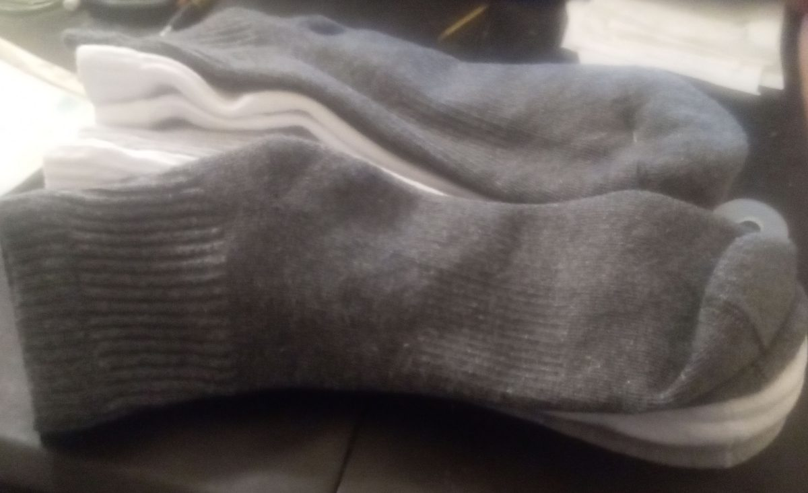

Loafer & Slip-On
Ultra-Low Cut
•
200-Needle Knit
The Invisible Loafer Liner
Cut below the vamp line to remain completely hidden in Belgian loafers and penny moccasins. Features our patented multi-tier silicone heel web.